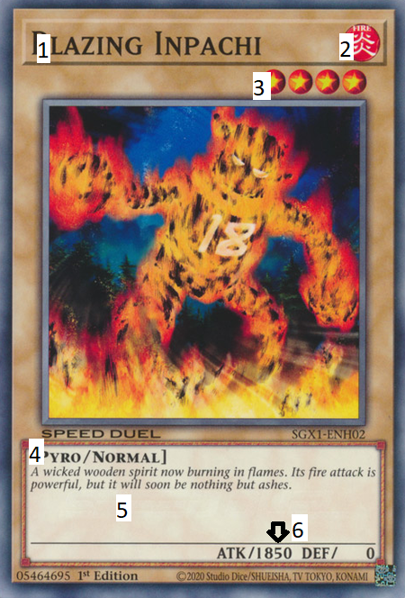
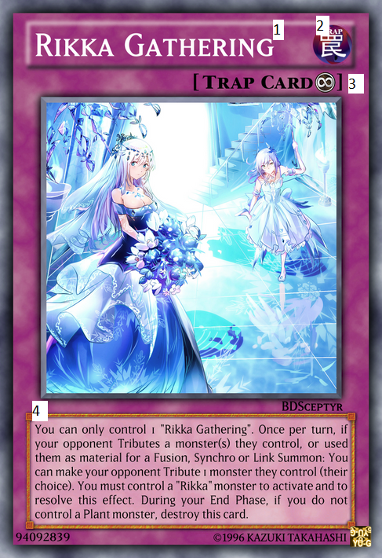

There are many duelists out there who wish to become the King of Games, from young to old, there are many different types of decks to choose from! Many mechanics also exist these being predominantly:
- Fusion
- Synchro
- XYZ
- Pendulum
- Link
Before we get down to any learning how to play, we have to first establish some basics which will stick with us throughout our journey on our way to become to best duelist around!
Card Types
Monsters are characterized by a beige border and are your main weapons, utilizing them to attack your opponent and reduce their lifepoint to 0! They can be powerhouses that dominate the field, or have very useful effects that can be utilized to bring out other monsters, add other cards to hands or even stop your opponent from advancing their plays!
Spellsare characterized by a light green border and offer a large amount of versatility, being able to be played immediately, or be saved for use later! Some can even be used on your opponent's turn, and others stay on the field even after being used, allowing them to be used for future turns! From searching your deck for crucial cards, to boosting attack, these help you to achieve victory!
Traps are characterized by a light purple border must first be set before being activated, so they can be a little slower, but because of this, they often have far more powerful effecs which can help turn the tides of battle! From destroying all monsters during battle, to negating effects, or even banishing your opponent's field, there are many possibilities!
Reading a Monster Card
- 1.Card Name-This is the name of the card, in this case. In this example, It is Blazing Inpachi.
- 2.Attribute- Monsters will belong to one of 7 Attributes. In most cases, attribute is not important, but usually cards of the same attribute will work well together! For spells and traps, the "attribute" will be either spell or trap.
- 3.Level- This indicates the level of the monster. Level 4 and below can be summoned normally, but higher level monsters require you to sacrifice other monsters!
- 4.Type- This shows the type of the monster. Normally certain types work well together, and certain cards only affect or target certain types of monsters.
- 5.Effect/Description- This will show either what the monster does, or a decription if the monster has no effect.
- 6.Stats- Displays the attack and defense of cards if they are monsters.

Reading a Spell Card
- 1.Card Name- This is the name of the card, in this case. In this example, It is Lost World.
- 2.Type- This shows you if it is a spell/trap or if it has an attribute, it will be a monster.
- 3.Symbol- Each spell/trap has a symbol, representing different things. This one is a fieldspell.
- 4.Effect- This tells you what the spell does.
Reading a Trap Card
- 1.Card Name- This is the name of the card, in this case. In this example, It is Rikka Gathering.
- 2.Type- This shows you if it is a spell/trap or if it has an attribute, it will be a monster.
- 3.Symbol- Each spell/trap has a symbol, representing different things. This one is a continuous trap.
- 4.Effect- This tells you what the trap does.